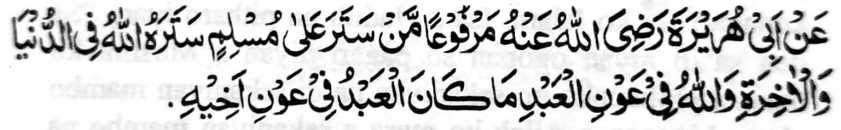
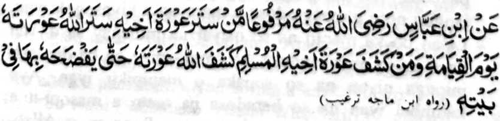
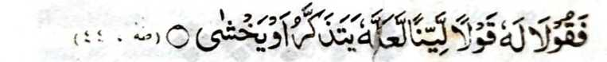

Giyangka-iya pinto na makapantaga-i ko isa pen a tanto a mala-i gona ko kathabligh, a sabap ko gi-i ron kasisiyapa o gi-i mamanolon, na kena ba miyaka-ompiya ka baden miyakakaid.
Ibarat, na igira ipezapar ko isa so marata, o di na masabet sekaniyan ko marata a ola-ola, na osiyati ngka sekaniyan sa masolen a di sekaniyan makakhaya-kaya ko manga tao; ka so daradat o Muslim na tanto a mala-i arga a nganin, sa lagid o kiya-osay niyan sangka-iya a pagalowin tano a manga katharo o Nabi (Sallallaho ‘Alaihi wa Sallam):

Miyaka thitayan ko Abu Hurairah (Radhiallaho ‘Anho) a pitharo o Nabi (Sallallaho ‘Alaihi wa Sallam), “Sa tao a sapengan niyan so kaya-an o Muslim na sapengan mambo o Allah so kaya-an niyan sa donya go sa Akhirat, go so Allah na pethabangan niyan so oripen Niyan ko tenday a kapethabangi o oripen ko pagari niyan.” (Targhib)

Miyaka thitayan ko Ibn Abbas (Radhiallaho ‘Anho) a pitharo o Nabi (Sallallaho ‘Alaihi wa Sallam), “Sa tao a sapengan niyan so kaya-an o pagari niyan a Muslim na sapengan mambo o Allah so kaya-an niyan ko Gawi-i a Qiyamah, na sa tao a sawa-an niyan so pa-awing o pagari niyan a Muslim na sawa-an mambo o Allah, so pa-awing iyan taman sa makakhaya-kaya sekaniyan si-i ko soled o walay niyan.” (Targhib)
Sakamaoto mambo a madakel den a manga Hadith makapantag si-i, sa giyoto-i sabap, a so gi-i mamanolon ko Islam na tanto iran a siyapa o ba iran pekha-aloy so manga pa-awing ago tatapa iran so kapagari-ari ko Islam.
Si-i ko madakel a Hadith a lagida-i, na so kaphapaka-ito-a ko Muslim na tanto a inisapar; giyoto-i sabap a so gi-i mamanolon na siyapa iran phorong angka-iya a bandingan. Aya ontol a okit na:
Lalan bo ka maoto na so osiyat na imbegay sa di ron kaya-an so miyakandosa, ka amay-amay na ba den aya inionga niyan na so sopaka o mapipikir iyan. Aya katimbel iyan na so baradosa na tanto a masopi-it a kapagalangi ron, a onot ko manga Sogo-an o Allah, ogaid na di tano pakalipatan angkanan a manga pando-an makapantag ko kaphagadati ko daradat o omani Muslim.
Ped ro-o, na so gi-i manolon na paliyogaton so kapaka-inaya niyan ko katharo iyan igira pendolonen niyan so manga tao, sabap sa so karangit ago so manga sasakit a katharo na aya iphagonga niyan na so sopaka o kabaya a onga.
Aden a gi-i mangosiyat a tanto niyan a piyamakasakit so katharo iyan ko Khalif a Ma’mun-ul-Rashid. Pitharo iyan non, “Pagadati ako ngka ago paka-inaya ngka raken so katharo-o ka raken, ka so Pir’aon na sobra raken sa karata, go so Nabi Mosa (‘Alaihis Salam) na maporo-i daradat a di seka, ogaid na kagiya sekaniyan ago so Haroon (‘Alaihis Salam) na sogo-on siran ko Pir’aon, na pitharo kiran o Allah:

‘Na mbitiyara-on niyo sekaniyan sa lalag a malinanek, ka kalo-kalo o sekaniyan na makapaginengka, o di na malek.’” (Surah Taha: 44)
Aden a sakatao a mangoda (pho-on sa kilid a inged) a somiyong ko Nabi (Sallallaho ‘Alaihi wa Sallam) na miyatharo iyan, “Pangonoten ka raken a kapakazina ko.” So manga Sahabah o Nabi (Sallallaho ‘Alaihi wa Sallam) na tanto iran noto a inikagowad, go tanto siran a kiyararangitan sangkoto a manga katharo iyan; ogaid na so Nabi (Sallallaho ‘Alaihi wa Sallam) na pitharo iyan non, “Obay ka raken. Ba ngka kabaya a aden a tao a pamakain niyan so ina a ka?” Pitharo iyan, “Di!” So Nabi (Sallallaho ‘Alaihi wa Sallam) na pitharo iyan, “Sakamaoto mambo a so manga ped a tao na di ran kabaya angkoto a piyakayaya a ola-ola ko ina iran.”
Oriyan noto na so Nabi (Sallallaho ‘Alaihi wa Sallam) na ini-iza iyan noto makapantag ko babay niyan, go so babo iyan, go so manga ped, na aya den a pekhisembag iyan na di! Oriyan noto na so Nabi (Sallallaho ‘Alaihi wa Sallam) sa inideket iyan so lima niyan sa rareb angkoto a mangoda na miyamangeni:
“Ya Allah! Soti-a Ngka so poso iyan, go rila-i Ngka so manga dosa niyan, go siyapa Ngka sekaniyan ko kazina.”
So manga miyanothol si-i na pitharo iran, a si-i ko oriyan na-i na da pen a pekhararangitan angkoto a mangoda a ola-ola a ba makalawan ko kazina.
So kakempet iyan, na so pephanolon na paliyogaton so kikapedi-in niyan ago so kapagadati niyan ko pephamamakinegon, go pharangai niyan siran ko okit a kabaya iyan a giyoto-i okit a ikidi-a rekaniyan.